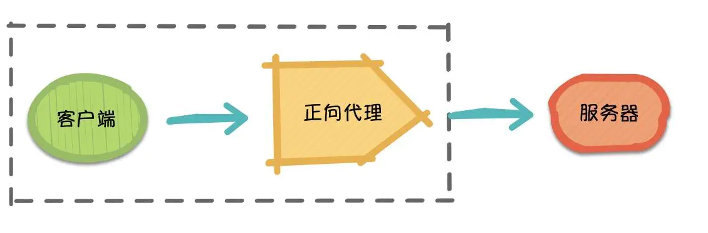
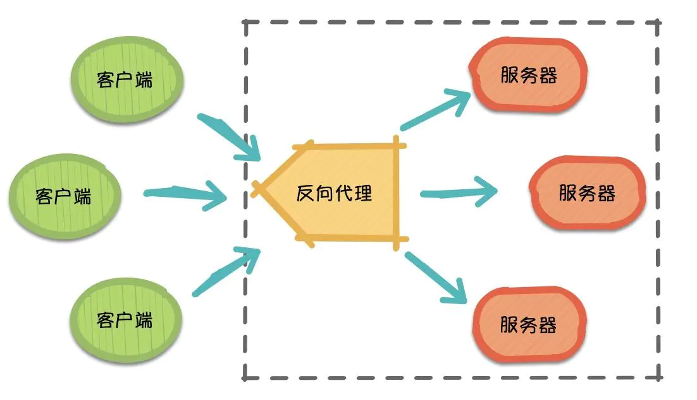
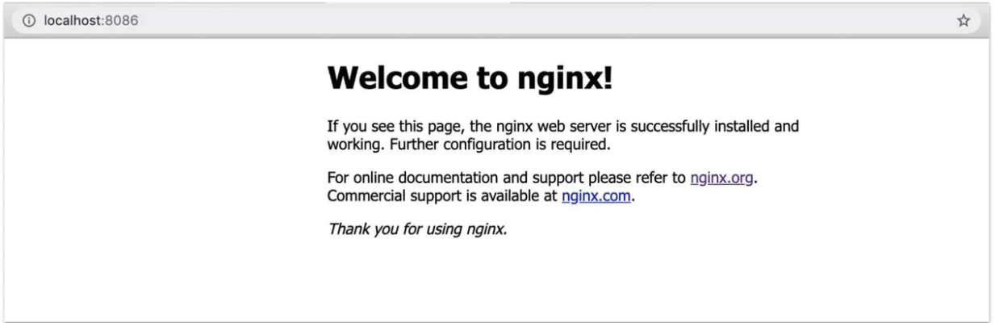
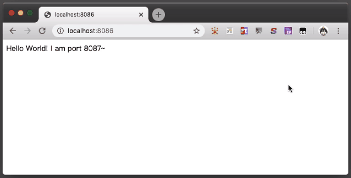

# 五分钟看懂 Nginx 负载均衡
# 前言
对于电商平台而言，随着业务的不断发展壮大，网站访问量和数据量也随之急剧增长，该情况的产生给服务器带来了一定的负担。从用户体验层面而言，由于服务器端数据处理带来的时延，往往导致页面的响应速度过慢、操作流畅性受阻等问题。这在某种程度上甚至会潜在影响平台的成交量。提供高效率，高质量的服务成为亟待解决的问题。负载均衡策略的出现和发展成为缓解上述问题的有效途径。本文将带你了解基于 Nginx 实现的负载均衡。
# 什么是负载均衡
负载均衡（Load Balance），它在网络现有结构之上可以提供一种廉价、有效、透明的方法来扩展网络设备和服务器的带宽，并可以在一定程度上增加吞吐量、加强网络数据处理能力、提高网络的灵活性和可用性等。用官网的话说，它充当着网络流中“交通指挥官”的角色，“站在”服务器前处理所有服务器端和客户端之间的请求，从而最大程度地提高响应速率和容量利用率，同时确保任何服务器都没有超负荷工作。如果单个服务器出现故障，负载均衡的方法会将流量重定向到其余的集群服务器，以保证服务的稳定性。当新的服务器添加到服务器组后，也可通过负载均衡的方法使其开始自动处理客户端发来的请求。（详情可参考：What Is Load Balancing?）
简言之，负载均衡实际上就是将大量请求进行分布式处理的策略。
# 什么是 Nginx 负载均衡
通过上文简单的概念介绍，你可能对负载均衡有了一个初步的了解，知道它是一种调度策略。那么问题来了，Nginx 又是什么呢？Nginx 如何实现负载均衡？这就要从正向代理和反向代理说起了。
正向代理
正向代理（Forward Proxy）最大的特点是，客户端非常明确要访问的服务器地址，它代理客户端，替客户端发出请求。比如：科学上网，俗称翻墙（警告 ：翻墙操作违反相关法律规定，本文只是为了解释正向代理向读者举个例子，仅供学习参考，切勿盲目翻墙）。

假设客户端想要访问 Google，它明确知道待访问的服务器地址是 www.google.com/，但由于条件限制，它找… Google 的”朋友”：代理服务器。客户端把请求发给代理服务器，由代理服务器代替它请求 Google，最终再将响应返回给客户端。这便是一次正向代理的过程，该过程中服务器并不知道真正发出请求的是谁。
反向代理
那么，随着请求量的爆发式增长，服务器觉得自己一个人始终是应付不过来，需要兄弟服务器们帮忙，于是它喊来了自己的兄弟以及代理服务器朋友。 此时，来自不同客户端的所有请求实际上都发到了代理服务器处，再由代理服务器按照一定的规则将请求分发给各个服务器。
这就是反向代理（Reverse Proxy），反向代理隐藏了服务器的信息，它代理的是服务器端，代其接收请求。换句话说，反向代理的过程中，客户端并不知道具体是哪台服务器处理了自己的请求。如此一来，既提高了访问速度，又为安全性提供了保证。

在这之中，反向代理需要考虑的问题是，如何进行均衡分工，控制流量，避免出现局部节点负载过大的问题。通俗的讲，就是如何为每台服务器合理的分配请求，使其整体具有更高的工作效率和资源利用率。
Nginx 是什么？
Nginx 作为一个基于 C 实现的高性能 Web 服务器，可以通过系列算法解决上述的负载均衡问题。并且由于它具有高并发、高可靠性、高扩展性、开源等特点，成为开发人员常用的反向代理工具。
# 负载均衡常用算法
1. 轮询 （round-robin）
轮询为负载均衡中较为基础也较为简单的算法，它不需要配置额外参数。假设配置文件中共有 M 台服务器，该算法遍历服务器节点列表，并按节点次序每轮选择一台服务器处理请求。当所有节点均被调用过一次后，该算法将从第一个节点开始重新一轮遍历。
特点：由于该算法中每个请求按时间顺序逐一分配到不同的服务器处理，因此适用于服务器性能相近的集群情况，其中每个服务器承载相同的负载。但对于服务器性能不同的集群而言，该算法容易引发资源分配不合理等问题。
2、加权轮询
为了避免普通轮询带来的弊端，加权轮询应运而生。在加权轮询中，每个服务器会有各自的 weight。一般情况下，weight 的值越大意味着该服务器的性能越好，可以承载更多的请求。该算法中，客户端的请求按权值比例分配，当一个请求到达时，优先为其分配权值最大的服务器。
特点：加权轮询可以应用于服务器性能不等的集群中，使资源分配更加合理化。
Nginx 加权轮询源码可见：ngx_http_upstream_round_robin.c，源码分析可参考：关于轮询策略原理的自我理解。其核心思想是，遍历各服务器节点，并计算节点权值，计算规则为 current_weight 与其对应的 effective_weight 之和，每轮遍历中选出权值最大的节点作为最优服务器节点。其中 effective_weight 会在算法的执行过程中随资源情况和响应情况而改变。较为核心的部分如下：
for (peer = rrp->peers->peer, i = 0;
peer; /* peer 为当前遍历的服务器结点*/
peer = peer->next, i++)
{
...
/* 每轮遍历会更新 peer 当前的权值*/
peer->current_weight += peer->effective_weight;
...
/* best 为当前服务器中的最优节点，即本轮中选中的服务器节点*/
if (best == NULL || peer->current_weight > best->current_weight) {
best = peer;
p = i;
}
...
}
复制代码
3. IP 哈希（IP hash）
ip_hash 依据发出请求的客户端 IP 的 hash 值来分配服务器，该算法可以保证同 IP 发出的请求映射到同一服务器，或者具有相同 hash 值的不同 IP 映射到同一服务器。
特点：该算法在一定程度上解决了集群部署环境下 Session 不共享的问题。
Session 不共享问题是说，假设用户已经登录过，此时发出的请求被分配到了 A 服务器，但 A 服务器突然宕机，用户的请求则会被转发到 B 服务器。但由于 Session 不共享，B 无法直接读取用户的登录信息来继续执行其他操作。
实际应用中，我们可以利用 ip_hash，将一部分 IP 下的请求转发到运行新版本服务的服务器，另一部分转发到旧版本服务器上，实现灰度发布。再者，如遇到文件过大导致请求超时的情况，也可以利用 ip_hash 进行文件的分片上传，它可以保证同客户端发出的文件切片转发到同一服务器，利于其接收切片以及后续的文件合并操作。
4、其他算法
URL hash
url_hash是根据请求的 URL 的 hash 值来分配服务器。该算法的特点是，相同 URL 的请求会分配给固定的服务器，当存在缓存的时候，效率一般较高。然而 Nginx 默认不支持这种负载均衡算法，需要依赖第三方库。最小连接数（Least Connections）
假设共有 M 台服务器，当有新的请求出现时，遍历服务器节点列表并选取其中连接数最小的一台服务器来响应当前请求。连接数可以理解为当前处理的请求数。
# 应用场景
说了这么多理论，究竟基于 Nginx 的负载均衡要怎么用呢？接下来，将以加权轮询算法为例，带大家尝试通过自己的一台笔记本 + Nginx + Node 测试一下负载均衡。由于没有多台服务器，于是通过自己笔记本的多个不同端口来模拟不同的服务器。
Step 1：确保自己的电脑中，Nginx 已安装并能够成功启动（以 Mac 为例）
如果你也遇到了像我一样由于端口占用导致 Nginx 启动失败的问题，可以尝试下述步骤修改配置文件中的端口号
相关文件路径
- /usr/local/etc/nginx/nginx.conf （配置文件路径）
- /usr/local/var/www （服务器默认路径）
- /usr/local/Cellar/nginx/1.8.0 （安装路径）
修改 nginx.conf 文件中的端口
server { # listen 8080; listen 8086; server_name localhost; } 复制代码Nginx 配置文件 nginx.conf 中主要包含以下几个部分：
- server：主机服务相关设置，主要用于指定虚拟主机域名、IP 和端口
- location：URL 匹配特定位置后的设置，反向代理设置
- upstream：负载均衡相关配置
暂停 Nginx 并重启
// 暂停 Nginx 服务 sudo nginx -s stop // 启动 Nginx 服务 nginx 复制代码打开 http://localhost:8086/ 测试是否成功，如果显示下图，则证明启动成功 ～

Step 2：基于 Node + Express 框架来搭建简单的服务器
Express 是一个简洁而灵活的轻量级 node.js Web 应用框架（详情可了解 Express），如果第一次使用，请先安装。
安装 Express
npm i express 复制代码新建 index.js 文件，并写入代码
const express = require('express'); const app = express(); // 定义要监听的端口号 const listenedPort = '8087'; app.get('/', (req, res) => res.send(`Hello World! I am port ${listenedPort}～`)); // 监听端口 app.listen(listenedPort, () => console.log(`success: ${listenedPort}`)); 复制代码启动服务器
node index.js 复制代码
此处可以多起几个服务，分别让 Node 监听 8087，8088，8089 端口，每个服务中通过 send 不同的文案用以区分不同的 Server。
Step 3：在 nginx.conf 文件中配置好需要轮询的服务器和代理
- 轮询的服务器，写在 http 中的 upstream 对象里：
upstream testServer {
server localhost:8087 weight=10;
server localhost:8088 weight=2;
server localhost:8089;
}
复制代码
- 代理地址，写在 http 中的 server 对象里：
location / {
root html;
index index.html index.htm;
proxy_pass http://testServer; // testServer 为自己定义的服务器集群
}
复制代码
Step 4：查看结果
- 重启 Nginx 服务
- 再次打开 http://localhost:8086/
- 
通过多次刷新可以发现，由于设置了不同的 weight，端口号为 8087 的服务器出现的次数最多，同时证实了权值越高，服务器处理请求几率越大的规则 。
文章来源：https://juejin.im/post/5e806d84e51d4546b659b370